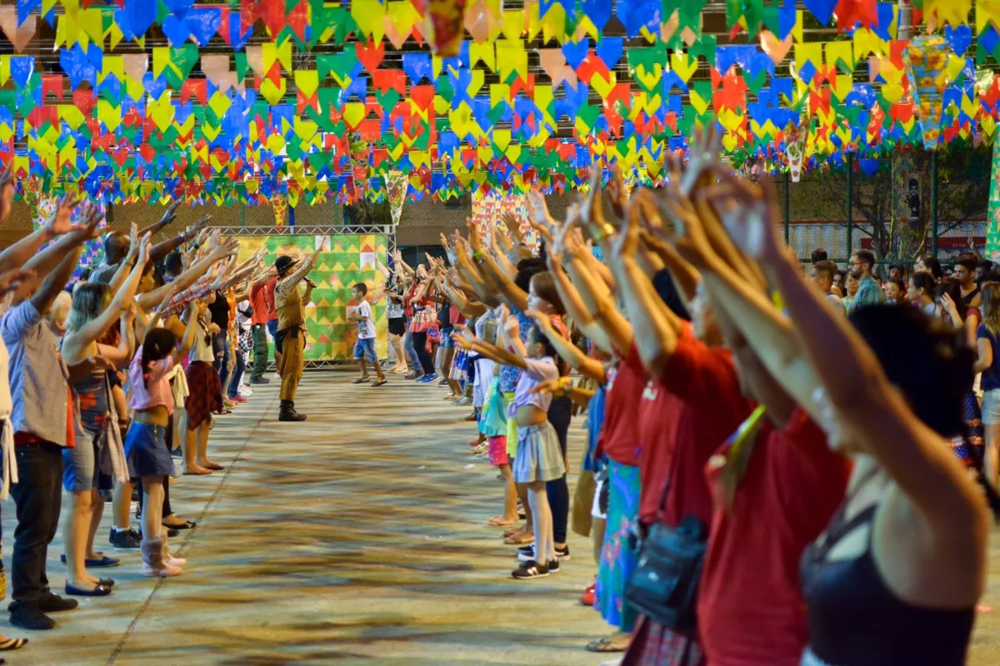
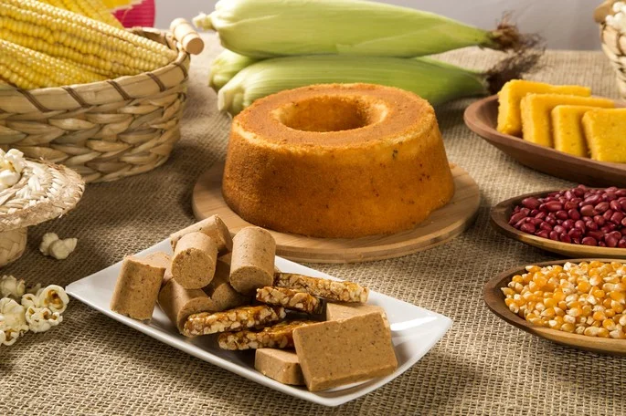
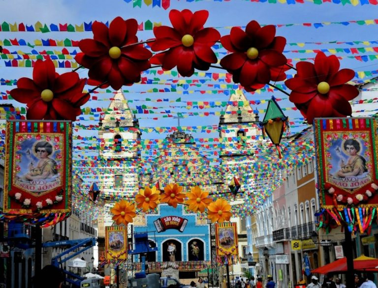

As festas juninas são uma tradição popular no Brasil, ocorrendo em todo o país durante o mês de junho, especialmente nas regiões nordeste e norte. Essas festividades têm suas raízes nas celebrações europeias do solstício de verão, mas foram adaptadas e incorporaram elementos da cultura brasileira ao longo do tempo. As festas juninas são marcadas por danças típicas, como a quadrilha, em que as pessoas se vestem com trajes caipiras e dançam ao som de músicas folclóricas. Além disso, há barracas de comidas típicas, como pipoca, canjica, pamonha, milho cozido, pé de moleque e quentão (bebida quente feita com cachaça, especiarias e açúcar). Também é comum a presença de fogueiras, bandeirinhas coloridas e brincadeiras tradicionais, como pescaria e correio elegante.
A festa junina tem origem pagã e inicialmente não tinha um caráter religioso. No hemisfério norte, as pessoas celebravam a chegada do verão em junho, homenageando os deuses da natureza e da fertilidade, enquanto pediam por uma colheita abundante. Comidas típicas, como o milho, eram consumidas, e fogueiras eram acesas nessas celebrações.
Apesar dos esforços da igreja para acabar com a festa pagã, ela acabou adquirindo um caráter religioso ao ser adotada pela igreja católica. Os portugueses trouxeram a festa junina para o Brasil durante o período colonial, onde recebeu o nome de Festa Joanina, possivelmente por ocorrer em junho ou em referência a São João, o santo mais importante da comemoração.
Os três santos católicos, São João, Santo Antônio e São Pedro, foram escolhidos para serem homenageados na festa junina por serem os mais populares do mês de junho. A festa junina sofreu influências das culturas africana e indígena desde que chegou ao Brasil, resultando em características peculiares em diferentes regiões do país.
Características da Festa Junina
Muitas tradições que acompanham essa comemoração representam os principais símbolos das festas juninas que incluem: as comidas, as danças típicas, os balões, a fogueira, as brincadeiras e as roupas.
Comida típicas da Festa Junina
O milho é um alimento muito importante nessas comemorações e, por isso, diversas comidas típicas de festa junina levam esse ingrediente.
Os principais pratos típicos de festa junina são: pipoca, paçoca, pé de moleque, canjica, cachorro-quente, pamonha, curau, bolo de milho, arroz-doce, pinhão, cuscuz e tapioca.
Já as bebidas mais tradicionais são: vinho quente e quentão.
Danças típicas da Festa Junina
Nas festas juninas ouve-se e dança-se forró. A quadrilha junina é, todavia, a dança típica da festa. Ela tem origem nas danças de salão na França e consiste numa bailada de casais caracterizados com vestimenta tipicamente caipira.
Uma coreografia chamada de casamento caipira é feita em homenagem a Santo Antônio, o santo casamenteiro.
Balões e fogueira na Festa Junina
Os balões são tradicionais, embora atualmente existem restrições por questões de segurança. Tradicionalmente, a soltura de balões indica o início das comemorações.
A fogueira também faz parte do cenário da festa. De origem pagã, ela simboliza a proteção contra os maus espíritos.

A tradição foi mantida pelos católicos, que dedicaram uma forma de fogueira diferente para cada santo: a quadrada é de Santo Antônio; a redonda de São João; e a triangular de São Pedro.
Brincadeiras de festa junina
Brincadeiras como a cadeia, pau de sebo, pescaria, correio-elegante, saltar a fogueira, argola, entre outros, não podem faltar. Estão incluídas também as simpatias - que acabam carregando um pouco do tom de divertimento.
No dia 13 de junho as igrejas distribuem o “pãozinho de Santo Antônio”, o qual deve ser comido pelas mulheres que procuram marido.
Roupas de festa junina
As roupas tradicionais de festa junina são tipicamente caipiras, com vestimentas bem coloridas e de estampa xadrez.
Inserida no contexto das festas juninas, a Festa de São João acontece nos dias 23 e 24 de junho, para celebrar o nascimento deste Santo Popular, conhecido como o Santo festeiro.
São João nasceu teria nascido no dia 24 de junho e foi um dos santos mais próximos de Jesus Cristo, participando de seu batizado nas margens do Rio Jordão. Por isso, o Dia de São João é 24 de junho.
A festa de São João no Nordeste
No Brasil, a noite de São João mais famosa acontece na região nordeste do país, na cidade de Campina Grande, no estado da Paraíba. Esta é considerada a maior festa de São João do mundo.
No entanto, outras cidades nordestinas se destacam: Caruaru, em Pernambuco; São Luís, no Maranhão; Mossoró, no Rio Grande do Norte; e Teresina, no Piauí.